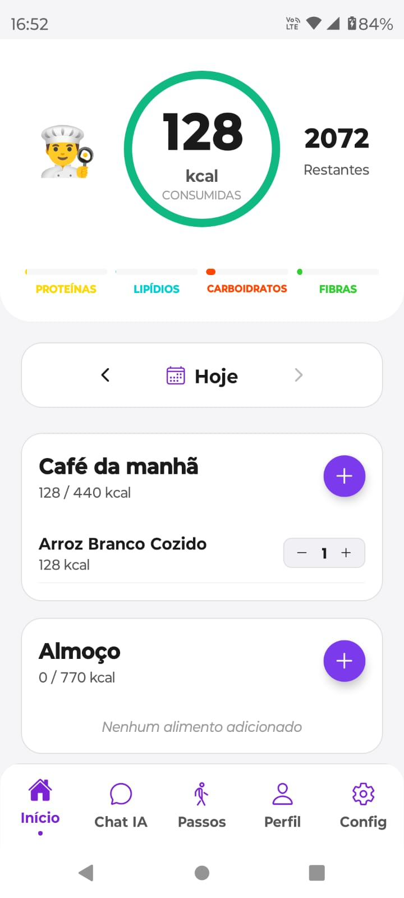
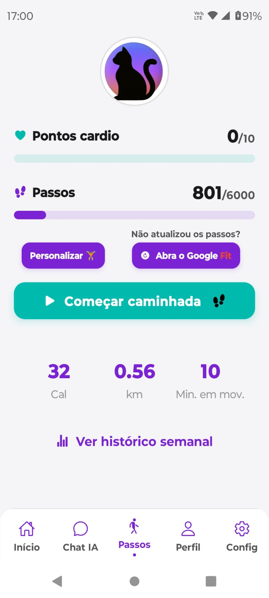
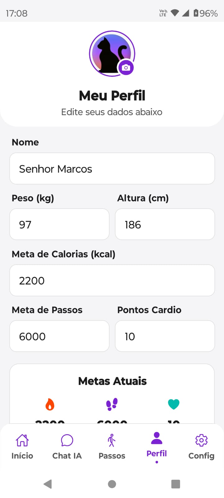
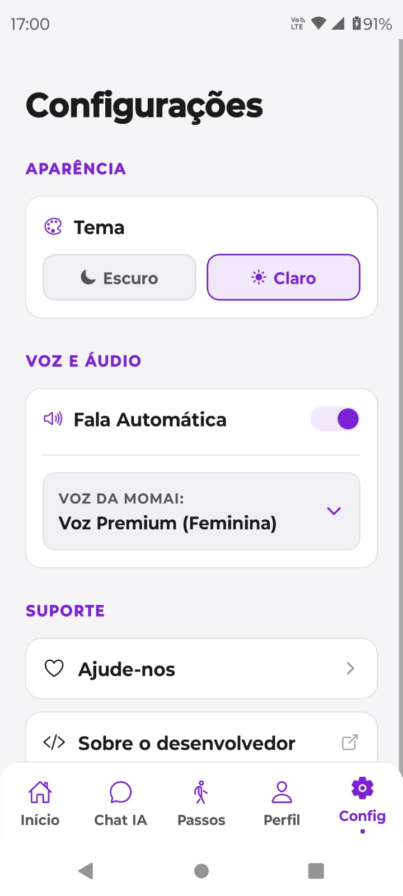

Como Usar
Guia visual para você dominar todas as funções da MomAI Saúde.

Controle sua Nutrição
Na aba Início, você acompanha suas calorias diárias. Registre suas refeições clicando no botão "+" e veja o balanço de proteínas, lipídios, carboidratos e fibras em tempo real.

Monitore seus Passos
Acesse a aba Passos para ver sua evolução diária. Você pode iniciar uma caminhada manual ou sincronizar seus dados diretamente com o Google Fit para maior precisão.

Configure seu Perfil
Acesse a aba Perfil para inserir seus dados como peso, altura e metas. Isso permite que a MomAI Saúde calcule suas necessidades calóricas e metas de passos de forma personalizada.

Personalize o App
Na aba Config, você pode alternar entre os temas claro e escuro, além de configurar a Voz da MomAI e ativar a fala automática para interagir com a assistente de saúde.
Pronto para começar?
Sua saúde merece o melhor cuidado, com privacidade e tecnologia.
 Baixar MomAI Saúde
Baixar MomAI Saúde